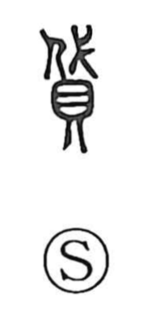

貸

Kun: kasu | On: tai
to lend ・ loan ・ to bestow ・ give alms
Explanation
Shirakawa treats 貸 as a phono-semantic character, with 代 functioning as the sound element that signals the on reading tai. Early lexica gloss it as acts of bestowal—giving alms or granting aid—akin to the senses of 施 and 予, and this older value is preserved in compounds such as 貸救 and 貸施. Over time the usage shifted from charitable giving to the transactional realm, yielding the familiar sense of lending seen in terms like 貸借, 貸与, and 賃貸; the everyday kun reading kasu reflects this later development.